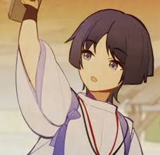

Scaramouche, nome real Kunikuzushi (japonês: 国崩 lit. "Destruidor de Nações")[3] [Note 1] também conhecido como "O Baladeiro", é o Nº 6 dos Onze Mensageiros dos Fatui. Scaramouche aparece pela primeira vez como o principal antagonista do evento Estrelas Que Não Voltam.
